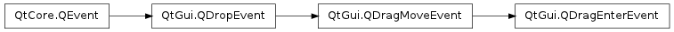

QDragEnterEvent ¶

Detailed Description ¶
The PySide.QtGui.QDragEnterEvent class provides an event which is sent to a widget when a drag and drop action enters it.
A widget must accept this event in order to receive the drag move events that are sent while the drag and drop action is in progress. The drag enter event is always immediately followed by a drag move event.
PySide.QtGui.QDragEnterEvent inherits most of its functionality from PySide.QtGui.QDragMoveEvent , which in turn inherits most of its functionality from PySide.QtGui.QDropEvent .
- class PySide.QtGui. QDragEnterEvent ( pos , actions , data , buttons , modifiers ) ¶
-
Parameters: - actions – PySide.QtCore.Qt.DropActions
- modifiers – PySide.QtCore.Qt.KeyboardModifiers
- data – PySide.QtCore.QMimeData
- pos – PySide.QtCore.QPoint
- buttons – PySide.QtCore.Qt.MouseButtons